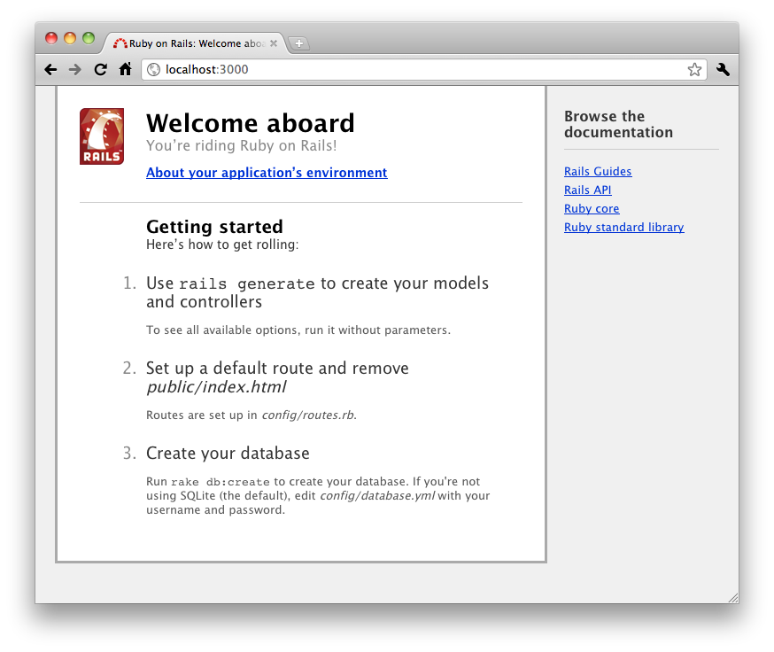
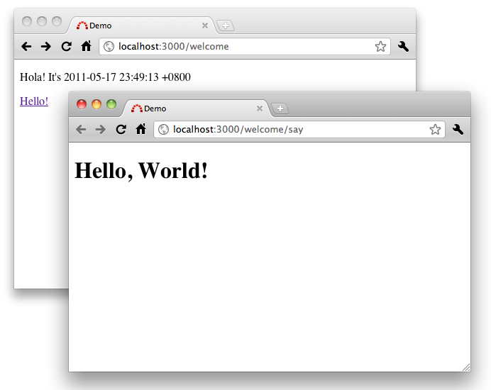
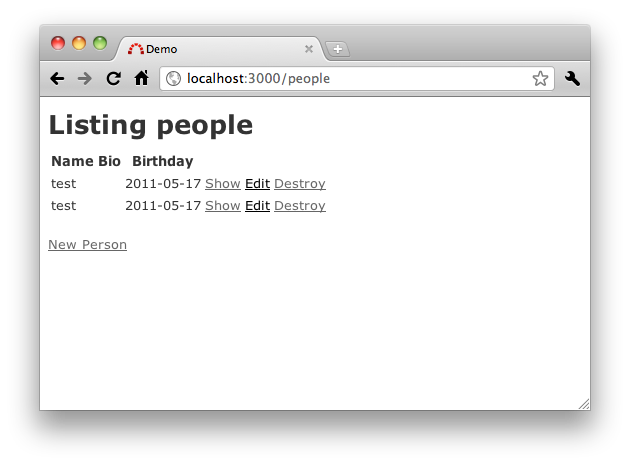
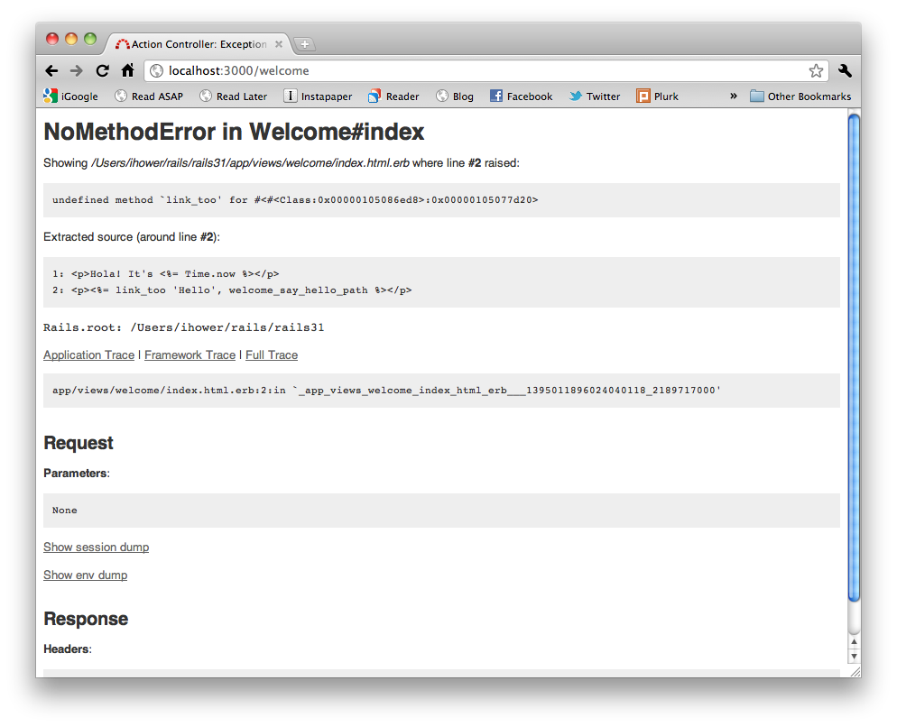
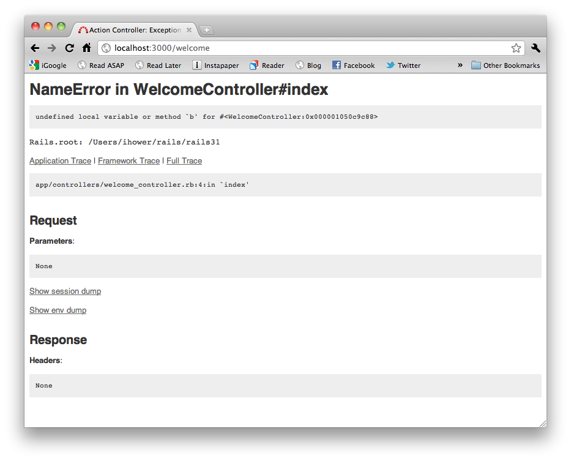
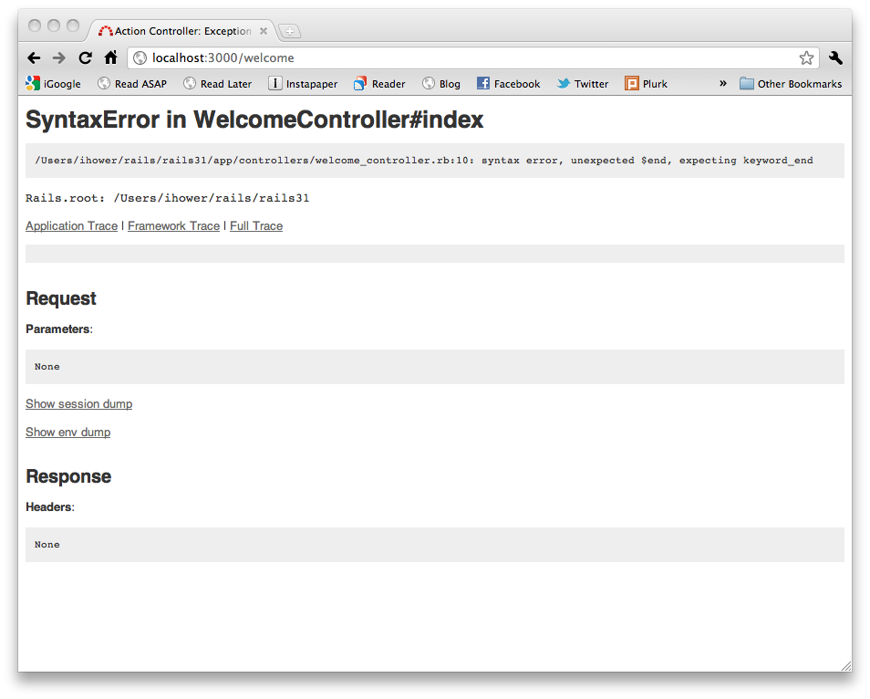
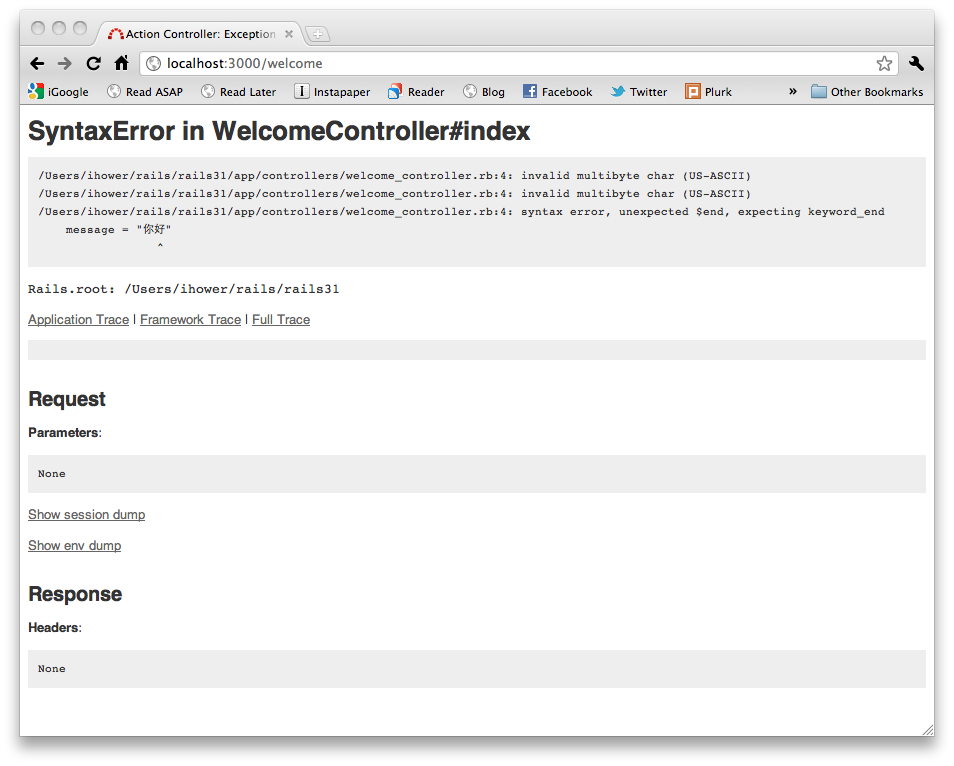

本書尚未完成，如果您有任何意見、鼓勵或勘誤，歡迎來信給我，謝謝。
在這一章中，我們將開始介紹如何建立一個最簡單的Hello, World!程式，以及用最快速的方式製作CRUD應用。
CRUD指的是Create(新增)、Read(讀取)、Update(更新)、Delete(刪除)四種操作資料的基本方式。
在上一章安裝Rails後，你會在命令列中得到一個rails的指令，這個指令可以初始一個Rails專案目錄。
首先請打開一個命令列視窗(Terminal)，然後找個目錄適合放你的Rails專案，就說是projects好了：
$ mkdir projects
$ cd projects接著，輸入以下指令就會建立一個叫做demo的Rails專案：
$ rails new demo如果出現建立出來的目錄不是demo而是new，表示你的Rails版本是舊版的，請輸入
rails -v檢查Rails的版本必須是3.0以上。不是的話，請回上一章末執行gem install rails安裝Rails 3。
你會看到以下訊息顯示出總共新增了哪些檔案：
create
create README
create Rakefile
create config.ru
create .gitignore
create Gemfile
create app
...(略)...
create vendor/plugins
create vendor/plugins/.gitkeep這樣就建立出demo目錄，讓我們繼續：
$ cd demo這個目錄下包含了一個Rails專案基本會用到的目錄結構和檔案，讓我們簡單走訪一下，輸入ls(Windows讀者請輸入dir)顯示出此目錄下的檔案：
| 檔案/目錄 | 用途 |
|---|---|
| Gemfile | 設定Rails應用程式會使用哪些Gems套件 |
| README | 專案說明：你可以用來告訴其他人你的應用程式是做什麼用的，如何使用等等。 |
| Rakefile | 用來載入可以被命令列執行的一些Rake任務 |
| app/ | 放Controllers、Models和Views檔案，接下來的內容主要都在這個目錄。 |
| config/ | 應用程式設定檔、路由規則、資料庫設定等等 |
| config.ru | 用來啟動應用程式的Rack伺服器設定檔 |
| db/ | 資料庫的結構綱要 |
| doc/ | 用來放你的文件 |
| lib/ | 放一些自定的Module和類別檔案 |
| log/ | 應用程式的Log記錄檔 |
| public/ | 唯一可以在網路上看到的目錄，這是你的圖檔、JavaScript、CSS和其他靜態檔案擺放的地方 |
| script/ | 放rails這個指令和放其他的script指令 |
| test/ | 單元測試、fixtures及整合測試等程式 |
| tmp/ | 暫時性的檔案 |
| vendor/ | 用來放第三方程式碼外掛的目錄 |
Rails使用了一套叫做Bundler的工具可以幫助我們檢查及安裝這個Rails應用程式所有依存的套件，請輸入：
$ bundle install可以只輸入
bundle就是bundle install了。 每次有修改Gemfile這個檔案，都需要重新執行bundle
會出現
Fetching source index for http://rubygems.org/
...
Your bundle is complete! Use `bundle show [gemname]` to see where a bundled gem is installed.在開發用的電腦上，我們不需要安裝如Apache、IIS的網站伺服器。Ruby本身就有提供了HTTP伺服器可以執行Rails，要啟動它，我們另開啟一個指令視窗，cd進到剛剛建立的Rails專案目錄然後輸入rails server：
$ cd projects/demo
$ rails server 就會出現以下訊息：
=> Booting WEBrick
=> Rails 3.1.0.beta1 application starting in development on http://0.0.0.0:3000
=> Call with -d to detach
=> Ctrl-C to shutdown server
[2011-05-16 21:11:25] INFO WEBrick 1.3.1
[2011-05-16 21:11:25] INFO ruby 1.9.2 (2011-02-18) [x86_64-darwin10.7.0]
[2011-05-16 21:11:25] INFO WEBrick::HTTPServer#start: pid=13558 port=3000rails server 可以簡寫為 rails s
使用Ubuntu作業系統的朋友，如果啟動伺服器時出現Could not find a JavaScript runtime的錯誤，請編輯Gemfile這個檔案加上一行
gem 'therubyracer'，輸入bundle install安裝這個套件，然後再啟動一次rails server即可。這是因為在Ubuntu作業系統上預設沒有任何JavaScript直譯器可以給Rails使用。你可以裝Node.js或是安裝therubyracer這個Ruby套件來獲得JavaScript直譯器。
接著打開你的瀏覽器前往http://localhost:3000，我們可以看到Rails的預設首頁。這個Welcome Aboard的畫面可以確認設定無誤，點選About your application’s environment超連結可以看到更多環境資訊。

要中斷伺服器的話，請按Ctrl+C(若不靈光請改試Ctrl+Z)。在development開發模式的話，除了修改config或vender目錄下的檔案需要重新啟動之外，其他修改通常不需要重新啟動，修改的檔案會自動重新載入。如果是 production正式上線模式的話，修改任何檔案都必須重新啟動伺服器才會有效果。
讓程式說Hello World!可是我們學寫程式的一大傳統。我們提過Rails是MVC框架，顯示Hello World!不需要用到資料庫，所以我們只要先寫Controller和View，以及讓路由指派到這個Controller即可，輸入以下指令就會產生出一個叫做welcome的空Controller檔案：
$ rails generate controller welcome可以簡寫為
rails g controller welcome
接下來在路由檔案config/routes.rb新增一行設定：
Demo::Application.routes.draw do
get "welcome/say_hello" => "welcome#say"
# ...
endget這一行的意思是將http://localhost:3000/welcome/say_hello這樣的網址對應到welcome Controller的say Action。
編輯app/controllers/welcome_controller.rb，加入一個say方法：
class WelcomeController < ApplicationController
def say
end
end如果您使用Ruby 1.9系列，如果程式中有UTF-8字元，例如中文字，那麼在檔案開頭第一行必須加上
# encoding: utf-8。不然會有 invalid multibyte char (US-ASCII)的例外錯誤。
在Controller中，一個公開函式(public method)就代表一個Action，一個Action對應一個HTTP的請求和回應。接著我們打開瀏覽器瀏覽http://localhost:3000/welcome/say_hello，你會看到一個錯誤如下：
Template is missing
Missing template welcome/say, application/say with {:handlers=>[:erb, :builder], :formats=>[:html], :locale=>[:en, :en]}. Searched in: * "/Users/ihower/rails/rails31/app/views"這是因為我們還沒有準備好View檔案。請新增app/views/welcome/say.html.erb這個檔案，依照慣例目錄名就是Controller名稱、檔案名是Action名稱，第一個附檔名說明了這是HTML格式的檔案，第二個附檔名說明這是ERb樣板(我們會在View一章仔細介紹樣板)。編輯該檔案內容如下：
<h1>Hello, World!</h1>這時再重新整理一次瀏覽器，你就會看到Hello, World!了。
讓我們再新增一個頁面並加入超連結吧，再次編輯路由檔案config/routes.rb加入一個路由：
get "welcome" => "welcome#index"這一行的意思是將http://localhost:3000/welcome這樣的網址對應到welcome Controller的index Action。
編輯app/controllers/welcome_controller.rb加入
def index
end新增app/views/welcome/index.html.erb內容是
<p>Hola! It's <%= Time.now %></p>
<p><%= link_to 'Hello!', welcome_say_hello_path %></p>Time是Ruby內建的時間類別，Time.now會輸出目前時間。link_to是Rails內建的方法可以輸出超連結，而welcome_say_hello_path會輸出/welcome/say_hello這個網址。這種出現在View中的輔助方法統稱作Helper。瀏覽http://localhost:3000/welcome，將看到Hola!及Hello!超連結。

如何將網站首頁變更為welcome#index呢? 首先，我們將public/index.html這個檔案移除，這是因為Rails會優先回傳任何public目錄下的靜態檔案。接著編輯config/routes.rb打開以下的程式碼：
root :to => "welcome#index"Ruby的單行註解是用
#井號
這一行的意思是，將網站根目錄導引至welcome Controller的index Action。那在View中要怎麼建立回首頁的連結呢？編輯app/views/welcome/say.html.erb加入：
<p><%= link_to "Home", root_path %></p>操作資料庫是動態網站非常基本的功能，在撰寫CRUD應用程式之前，我們必須先設定好資料庫。Rails的資料庫設定檔是config/database.yml，如果你打開這個檔案，預設的設定是SQLite3。這個檔案裡包含三段不同環境的設定，對應到三個Rails執行環境：
Rails內建支援SQLite3這是一套非常輕量的非伺服器型資料庫程式，它的資料庫就只是一個檔案而已。流量大的正式上線環境雖然不適合 SQLite，不過拿來開發和測試卻非常好用。Rails預設也使用SQLite3資料庫來建立新的專案，以下是預設的設定資料config/database.yml：
# SQLite version 3.x
# gem install sqlite3
development:
adapter: sqlite3
database: db/development.sqlite3
pool: 5
timeout: 5000
# Warning: The database defined as "test" will be erased and
# re-generated from your development database when you run "rake".
# Do not set this db to the same as development or production.
test:
adapter: sqlite3
database: db/test.sqlite3
pool: 5
timeout: 5000
production:
adapter: sqlite3
database: db/production.sqlite3
pool: 5
timeout: 5000中間那段註解告訴你不要把test資料庫設成跟production或development同一個
本書接下來也都使用SQLite3資料庫，因為它完全不需要什麼設定就可以使用。
YAML格式嚴格要求縮排(建議為兩個空白)，且冒號後面必須有一個空隔。一般我們會預期YAML的值解析出來是字串，因此碰上值是數字或多行內容時，建議加上引號避免字串解析錯誤。例如
password: "123456"。如果沒有加上引號，這串數字會被解析成Fixnum物件而不是字串String。
資料庫設定好了，輸入以下的指令可以讓Rails建立出空的資料庫：
$ bundle exec rake db:create這將在db/目錄下建立出development和test的SQLite3檔案。
Rake是一種Ruby的命令列工具，你可以輸入
rake -T列出所有可用的指令。我們會在稍後的章節中詳細介紹Rake。
Rails的scaffold鷹架功能會自動產生一組Model、Views跟Controller程式碼，完成一個簡易的CRUD程式以供展示及學習之用。請輸入：
$ rails g scaffold person name:string bio:text birthday:date產生的檔案簡單說明如下，注意到Model的名稱是用單數person，而Controller照RESTful慣例是用複數people：
| db/migrate/20110517161435_create_people.rb | 用來建立people資料庫資料表的Migration(你的檔案開頭名稱會有不同的時間) |
| app/models/person.rb | person model檔案 |
| test/fixtures/people.yml | 用來測試的假文章資料 |
| app/controllers/people_controller.rb | people controller檔案 |
| app/views/people/index.html.erb | 用來顯示所有文章的index頁面 |
| app/views/people/edit.html.erb | 用來編輯文章的頁面 |
| app/views/people/show.html.erb | 用來顯示特定一篇文章的頁面 |
| app/views/people/new.html.erb | 用來新增文章的頁面 |
| app/views/people/_form.html.erb | 用來顯示編輯和新增文章的表單局部(Partial)樣板 |
| app/helpers/people_helper.rb | 可在文章Views中使用的Helper方法 |
| test/unit/person_test.rb | people model的單元測試 |
| test/functional/people_controller_test.rb | people controller的功能測試 |
| test/unit/helpers/people_helper_test.rb | people helper的單元測試 |
| config/routes.rb | 設定URL路由規則的檔案，scaffold再此新增了一行resources :people |
| app/assets/stylesheets/scaffold.css.scss | Scaffold鷹架提供的樣式檔案 |
| app/assets/stylesheets/people.css.scss | people的CSS樣式檔案 |
| app/assets/javascripts/people.js.coffee | people的JavaScript檔案 |
雖然鷹架(scaffolding)可以幫助你快速上手，但是可沒辦法產生出完美符合需求的程式碼。因此有經驗的Rails程式設計師甚少使用預設的鷹架產生程式碼，而是偏好使用Rails的generator來分別產生Model和Controller檔案，甚至客製出自己專屬的scaffold程式。
scaffold產生出來的程式中，有一項是資料庫遷移檔(database migration)。Migration的用途是建立和修改資料庫資料表。Rails使用rake指令來執行Migrations。Migration的檔名中包含了Timestamp(時間戳章)，用來確保它們可以依照建立時間依序執行。
請輸入以下指令執行Migration：
$ bundle exec rake db:migrateRails這時會建立people資料表：
== Createpeople: migrating ====================================================
-- create_table(:people)
-> 0.0019s
== Createpeople: migrated (0.0020s) ===========================================因為預設是跑在development模式，這個指令會用config/database.yml設定裡的development那段所指定的資料庫。
瀏覽http://localhost:3000/people就可以操作了，十分神奇吧。不過，這裡就不詳細說明其產生出來的程式碼了，讀者讀畢稍後章節後，自會明白。

NoMethodError非常明顯，就是你打錯方法了，例如此例中把link_to打成link_too。根據錯誤訊息你應該可以很容易找到是哪個檔案在哪一行。

NameError也很明顯，讀取一個不存在的變數會出現以下錯誤：

SyntaxError加上unexpected $end, expecting keyword_end的話，那一定是你少了(或多了)end關鍵字，def跟do都必須要有對應的end。不過很可惜Ruby沒辦法提示你是那一行少了(或多了)end，發生錯誤的行數都會是最後一行。

最後這個是Ruby 1.9才會有的情況：invalid multibyte char (US-ASCII)，表示你在原始碼裡面有UTF-8字元(例如中文)，你必須宣告以下註解在檔首就可以解決這個問題，當然你的檔案儲存格式必須是正確的UTF-8(無BOM記號)：
# encoding: utf-8